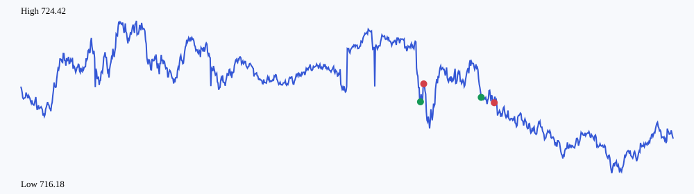

| 合约 | 方向 | 数量 | 入场 | 出场 | 净盈亏 | 原因 |
|---|---|---|---|---|---|---|
| QQQ260811P719000.US | put | 10 | 1.530000 | 1.140000 | -420.0000 | stop_loss |
| QQQ260811P720000.US | put | 10 | 1.170000 | 1.170000 | -30.0000 | stale_position |
被拒绝信号：2；系统事件：13
{
"data_quality": {
"one_minute_bars": 1000,
"missing_minutes_between_observations": 4874
},
"comparison_20d": {
"trading_days": 0,
"trades": 0,
"net_pnl": "0",
"win_rate": "0",
"average_slippage": "0"
}
}